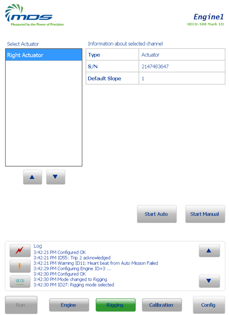
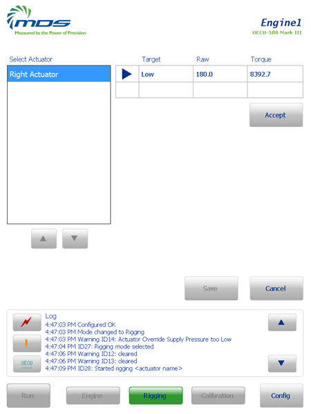
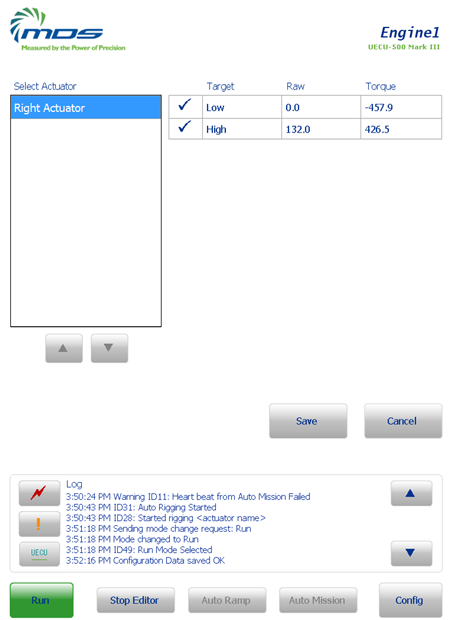

How To – Rig an Actuator
This How To provides the steps required to rig an actuator. Rigging is the process used to relate the position of the fuel control unit on the engine to the position of the actuator. The throttle actuator has a potentiometer to provide position feedback to the controller. Because the controller only knows the actuator position, a rigging is carried out to relate the fuel control unit position to the actuator position. A breakpoint table conversion is used as the relation. The rigging may be performed as a manual or an automatic procedure.
An actuator must be rigged before it can be used to control the engine.
Run Mode is disabled until the defined actuator(s) are rigged.
To Rig an Actuator
The actuator is moved via the lever to either 1 point or 2 points when performing a manual rigging.
- 1 point - the slope is constant and predefined in the configuration file and the actuator is manually moved to a single point which is used to calculate the rig offset
- 2 point - the actuator is manually moved to two different points and a new breakpoint table is calculated from those two points
There are 2 methods to rig an actuator:
Manually Rigging an Actuator
- At the bottom of the display computer screen, press the Rigging button .
The Rigging button is disabled if any of the following conditions are true.
- Is fuel turned on?
- Is a calibration in progress?
- An Auto Mission is in progress?
- Calibrations are disabled?
- An engine is not selected?
- The selected engine is not configured with an actuator.
The Rigging Mode screen is displayed.

This screen is displayed automatically if the engine is configured with an actuator.
- If 2 actuators are defined for the engine, from the list box, select the actuator to rig (either Right Actuator or Left Actuator).
- Press the Start Manual button.
- Using the throttle lever, move the actuator to the lowest rig point.
The position is displayed in the Position field.

- Press the Accept button to accept the position.
If only a one point rigging is required, go to step 9.
- Using the throttle lever, move the actuator to the highest rig point.
The position is displayed in the Position field.
- Press the Accept button to accept the position.
- Press the Save button to save the new rigging.
- If there are no other actuators to rig, press the Run button to move to the Run Mode screen.
To cancel the rigging, press the Cancel button.
Auto-Rigging an Actuator
An auto-rigging procedure moves the actuator automatically between the low point and the high point.
The auto-rigging procedure requires two mechanical stops at either end of the actuator travel. The mechanical stops must be able to handle the actuator torque. Rig pins cannot be used unless the rig pins do not hold the throttle lever in position.
- At the bottom of the display computer screen, press .
The Rigging Mode screen is displayed. The Rigging button is disabled if any of the following conditions are true.
- Is fuel turned on?
- Is a calibration in progress?
- An Auto Mission is in progress?
- Calibrations are disabled?
- An engine is not selected?
- The selected engine is not configured with an actuator.
This screen is displayed automatically if the engine is configured with an actuator.
- If 2 actuators are defined for the engine, from the list box, select the actuator to rig (either Right Actuator or Left Actuator).
- Press the Start Auto button.
- The throttle controller automatically moves the actuator to the low point at a slow controlled rate and holds until the signal stabilizes
- The throttle controller then moves the actuator to the high point at a slow controlled rate and holds until the signal stabilizes
- The throttle controller calculates the new breakpoint table
The new low and high point values are displayed.

- Press the Save button to save the new rigging.
To cancel the rigging press the Cancel button.
- Once all the actuators have been rigged, press the Run button to move to the Run Mode screen.